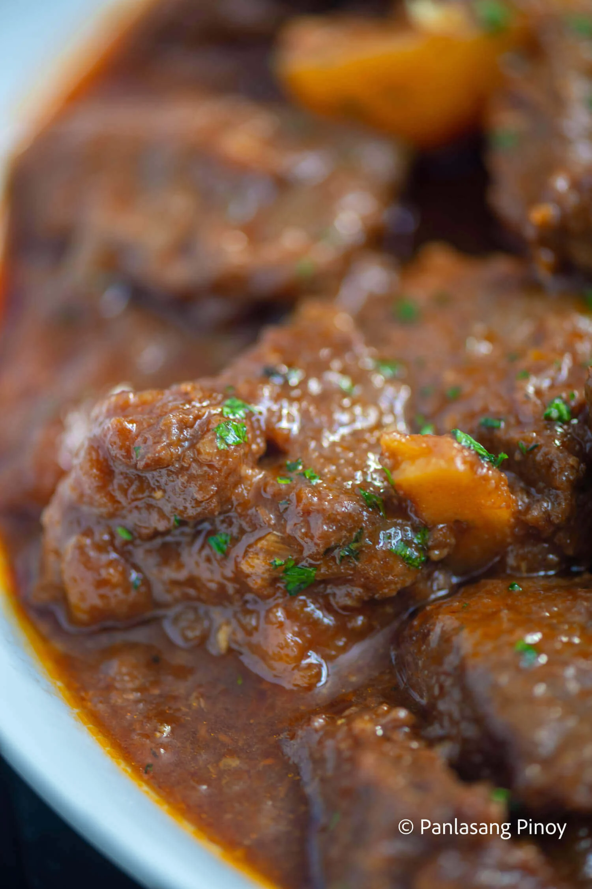

Beef Mechado

Ingredients
- 3 cloves garlic crushed
- 1 piece large onion sliced
- 2 lbs beef chuck cubed
- 8 ounces tomato sauce
- 1 cup water
- 3 tbsp cooking oil
- 1 slice lemon with rind
- 1 piece large potato sliced
- 1/4 cup soy sauce
- 1/2 tsp. ground black pepper
- 2 pieces bay leaves laurel
- salt to taste
Instructions
- Heat cooking oil in a pan then saute the garlic and onion.
- Put-in the beef and saute for about 3 minutes or until color turns light brown
- Add the tomato sauce and water then simmer until the meat is tender. Add water as needed. Note this can take 60 to 120 minutes depending on the quality of the beef.
- Add the soy sauce, ground black pepper, lemon rind, laurel leaves, and salt then simmer until excess liquid evaporates
- Put-in the potatoes and cook until the potatoes are soft
- Place in a serving plate then serve hot with rice. Share and Enjoy!